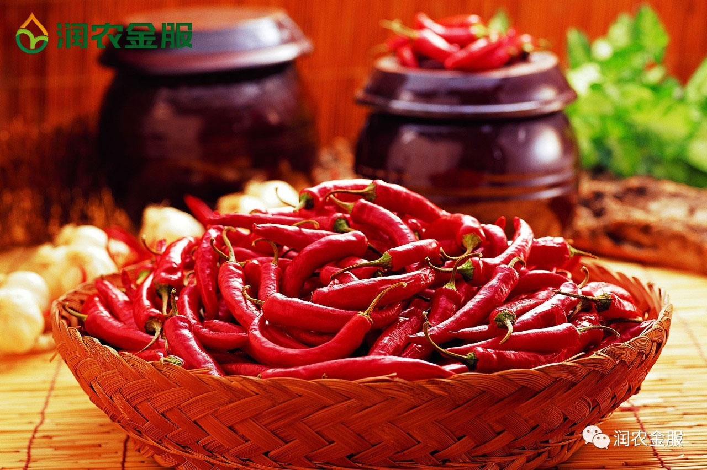
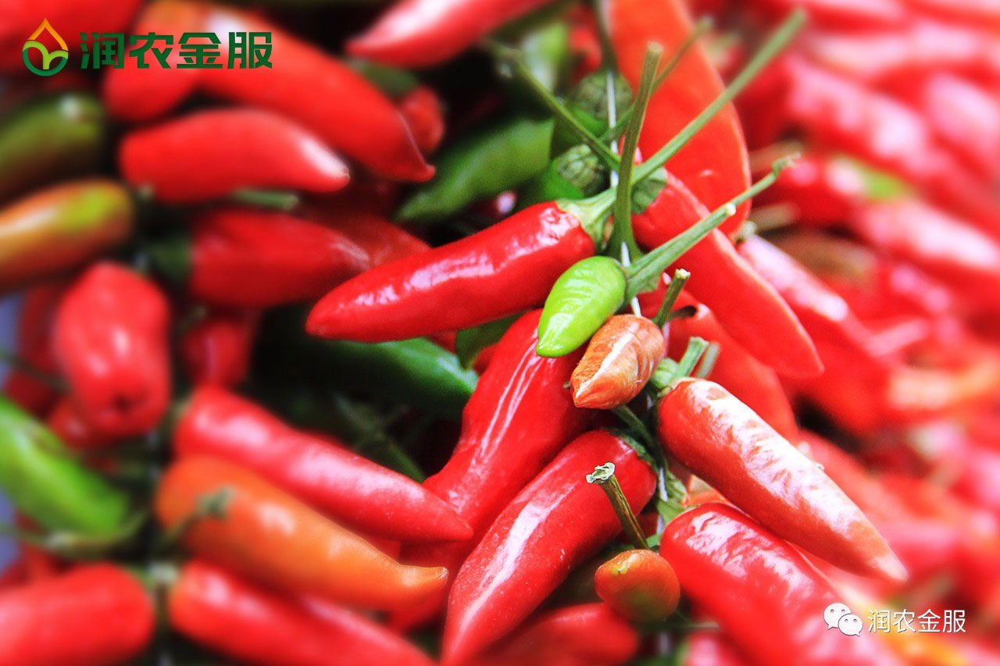

润农金服 | 服务三农 打造农村“专属金融”
中国，有9亿多农民，农民不富裕，又怎敢说自己强大？尽管近年来政府加大对农村投资服务力度，陆续推出多项惠及农民的政策，但是“三农”金融的缺口高达3.05万亿元，从上世纪末以来，商业银行急剧收缩农村网点，互联网金融的进军却使得农民陷入“一直种地，一直缺钱”的怪圈，农村万亿级的金融需求问题亟待解决。润农金服致力于三农（农业、农村、农民）金融服务，为农业产业链提供金融服务，打造农村“专属金融”。
农村金融是现代农村经济的核心，而且要满足农民的需求。农民种地生产，一般没有其他稳定的经济来源，家庭开支大部分靠地里的收入，虽然现在国家提供一定的种地补贴，但是依然无法平衡其他农资产品、人工等支出。
润农金服致力于新型农业生产模式，以“统一订单农业，集约化生产、金融服务渗透”。按照订单需求把农民、土地集约化，发挥规模效应，优化农业产业链，提升劳动生产效率，保障农产品质量，给市场提供更好的农业产品，通过一站式金融服务解决农业、农民的生产、生活问题。
润农金服提供农资产品的资金垫付，解决农民生产物资的资金难题，等到农产品收获后，按照统一订单销售到下游产业链，与农民一起获取销售利润。农资产品的资金垫付就是“借贷”给农民的本金，按照一个农产品周期作为还款周期，通过农产品销售获取的利润偿还农资“借贷”的本金和利息。
简言之，作为一家新型订单农业金融公司，润农金服为整个产业链提供全程的金融支持，以及为农户提供栽培技术，控制农药化肥的使用量，从而保证产量和质量。例如润农金服的辣椒项目，2016年底，在国家压缩玉米种植面积的导向之下，润农金服经过在种植领域的深入调研与前期试点后，确定在河北、山西两地与农户合作种植辣椒。以往每亩地种玉米的纯收入只有500元左右，而种辣椒却能达到3000元以上。
农民不用担心种出的辣椒价格低，销量差，因为润农金服的每一个惠农项目都经过详细的市场可行性分析，公司已经跟下游的加工企业签订了订单，锁定了收购价格。
在种植过程中，由于统一采购，润农金服为农民降低了种子、化肥、农药等农资成本，而公司又可以从整个产业链中抓取利润，从而补贴给农民，使得赊销为零利息。
当然，辣椒项目只是润农金服的其中一项，历经16年的发展，润农金服在全国享誉盛名，真正成为农民的“专属金融”，有许多的经销商、贸易商和合作社主动找到润农金服来寻求合作，他们看中了润农的经营、生产一体化的模式和农业金融的巨大前景。
内蒙古地区：现在内蒙东北地区试点高附值作物比如玉米，辣椒等。润农金服农技部门在当地做试种，优选品种。意向跟种100万亩。
山西、广西地区：山西、广西等地筹备有机茶，绿色食品等，预计明年大规模扩种。并对接对家下游终端销售渠道。
山东地区：在山东日照等地大规模的养殖农户（养鸡、养猪、养牛）也与润农金服签订了农业资金等合作！
等等地区不胜枚举，润农金服的足迹踏遍祖国的大江南北，福泽千万农户！
利益是企业发展的直接目标，责任却是企业壮大的动力源头，让农户得到真正的实惠，润及万家，这就是润农金服的企业初衷！